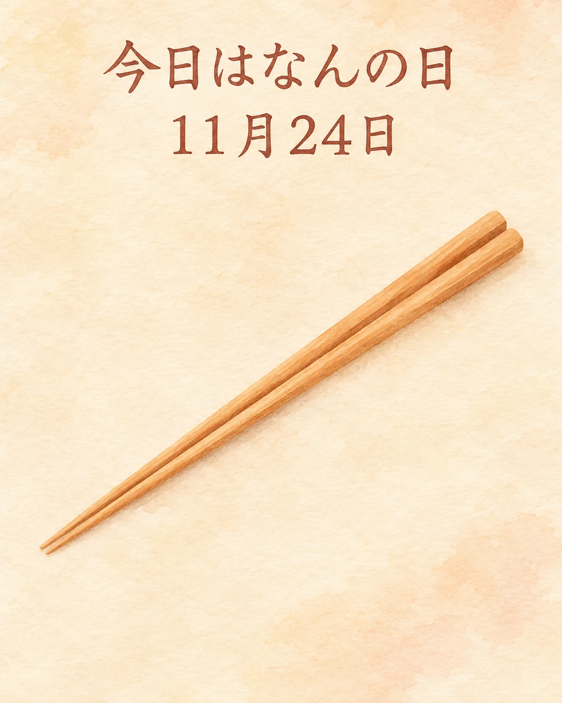

11月24日は「和食の日」です🥢
「いい日本食」の語呂合わせから、和食文化国民会議が制定した記念日。実りの秋に、和食文化の大切さを見つめ直し、次の世代へつないでいくきっかけの日です。
旬の食材を生かすこと、出汁や発酵のうま味を重ねること、器や盛り付けに季節を映すこと。何気ないひと箸にも、和食の知恵と心が息づいています。
和を軸に料理を考える饗応 元も、日々の一皿を通して、その豊かさを大切にしていきたいと思います。
季節の味わいとともに、心ほどけるひとときをお過ごしください✨
「いい日本食」にちなむ和食の日
和食文化国民会議は、日本の食文化を見つめ直し、その価値を次世代へ伝えるきっかけとして11月24日を「和食の日」としました。農林水産省の白書は2013年の申請・認定を記載し、2026年10月30日の発表でも、11月24日を和食の日として案内しています。
旬を大切にし、出汁や発酵のうま味を生かし、器や盛り付けにも季節を映す。和を軸に自由な料理を考える饗応 元にとっても、食文化の豊かさに改めて目を向ける日です。
画像は和食のひと箸を象徴する生成イラストです。当日の特別料理や催し、他団体の活動への参加を告知するものではありません。
出典：和食文化国民会議「11月24日は『和食』の日」、農林水産省・2026年の和食月間案内、農林水産省・食育の推進と和食の保護・継承（2026年11月24日確認）。